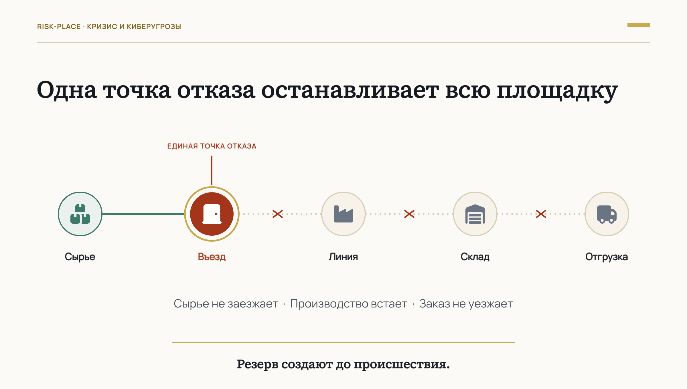

Представьте обычное утро: сырье должно въехать на площадку, линия — начать смену, склад — принять готовую продукцию, а машина — выехать к заказчику. Если въезд один и он закрыт, остальные звенья могут быть исправны, но день уже остановлен. Такой узел и называют единой точкой отказа.

Сначала пройдите путь одного заказа
Не начинайте со списка оборудования. Возьмите один реальный заказ и проследите его путь: от звонка клиента и приемки сырья до документа на выезд. На каждом шаге спрашивайте, что должно произойти, кто это делает и без какого ресурса шаг невозможен.
Так на схеме появляются не абстрактные риски, а конкретные зависимости: единственный шлюз для въезда, линия с долгой переналадкой, склад, где хранится вся готовая партия, или сотрудник, без подписи которого машина не выезжает.
Хорошая карта помещается на один лист и отвечает на простой вопрос: где цепочка обрывается, если сегодня что-то пошло не так?
Что можно заменить за день, а что нет
Далее разделите узлы на две группы. Первую рынок способен закрыть быстро: стандартное сырье, упаковку, транспорт, временный склад или подменную смену. Здесь помогают заранее найденные поставщики, договоренности и небольшой запас.
Вторая группа уникальна для вашей компании: рецептура, оснастка, специальная линия, условия ключевого договора или право выпустить конкретную партию. Купить такое на следующее утро обычно нельзя. Здесь нужен второй способ выполнить работу, размещенный в другом месте или в другом контуре.
- Для ходового ресурса запишите, кто поставит замену и в какой срок.
- Для уникального узла назначьте резервный процесс, площадку или полномочие.
- Для каждого варианта укажите предел: сколько заказов он реально позволяет выполнить.
Цена узла помогает выбрать защиту
Когда список готов, посчитайте цену одного дня остановки каждого критичного узла: несостоявшиеся отгрузки, продолжающиеся расходы на людей и аренду, возможные штрафы и работы по возврату к прежнему выпуску. Метод подробно разобран в статье о стоимости дня простоя.
Эта цифра переводит разговор из плоскости страха в плоскость выбора. Возможно, дешевле договориться о втором въезде, чем покупать резервную линию. А для другого узла запас готовой продукции на соседней площадке окажет больше пользы, чем сложный технический проект.
Резерв считается рабочим только после проверки
Недостаточно нарисовать вторую стрелку на схеме. Нужно пройти ею на практике: принять сырье через другой въезд, оформить заказ без привычной системы или выпустить машину по заранее подготовленному документу. Проверка сразу показывает, где не хватает доступа, полномочий или просто номера телефона.
Такую работу можно провести в рамках проверки готовности к атаке БПЛА: разобрать площадку по узлам, посчитать цену дня и проверить, какие вторые способы действительно работают.
Частые вопросы
С пути одного заказа. Пройдите цепочку от приемки сырья до выезда машины и отметьте каждый шаг, у которого нет второго способа выполнения.
Запас помогает какое-то время использовать имеющиеся ресурсы. Резерв дает второй способ выполнить работу, когда привычный ресурс недоступен.
Нет. Сначала сравните цену дня остановки, вероятность замены на рынке и стоимость резервного варианта. Дублирование оправдано там, где быстро купить замену нельзя.
Готова ли команда к первому часу кризиса
Планы проверяются не чтением, а сценарием. Диагностика покажет пробелы, корпоративный формат отрабатывает их с вашей командой на ваших процессах.